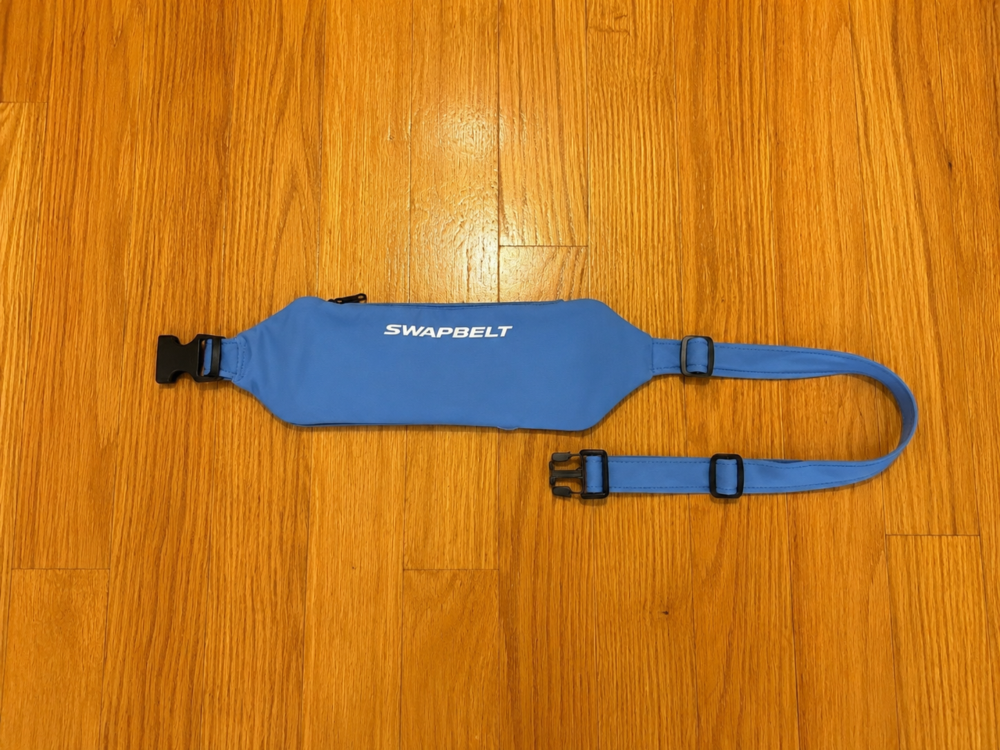

Sweat Happens
Belts absorb sweat, odors, and grime. Wearing the same one over and over gets old fast.
In development · Ready Every Run™
SwapBelt separates the sweat-wicking belt from the waterproof storage core, making it easier to stay clean, organized, and ready for your next run.

Why SwapBelt
Traditional running belts combine the pouch and the sweat-exposed fabric into one product. SwapBelt splits them apart so the part that touches your body can be cleaned after every run.
Belts absorb sweat, odors, and grime. Wearing the same one over and over gets old fast.
The waterproof pouch slides out in seconds, keeping your phone, keys, cards, and nutrition separate from the washable sleeve.
Wipe the core, wash the sleeve, and reassemble before your next run.
How it works
The current prototype uses a top-entry pouch insertion and snap attachment system. The sleeve concept has been validated through testing; the next focus is the final RF-welded TPU pouch.
Load essentials into the removable waterproof pouch.
Wear the low-profile belt while the sleeve handles sweat.
Pull the storage core out after the run.
Wipe the core and wash the sleeve.
Reassemble in seconds for the next run.


Product development
The sleeve design, insertion direction, snap system, elasticity, and pouch security have all been validated in prototype testing. The main remaining work is improving the TPU pouch construction so it holds shape better and feels more premium.
Sleeve shape validated
Top-entry pouch insertion validated
Snap attachment and run security validated
RF-welded TPU pouch development
Production prototype preparation
Future sleeve styles
SwapBelt is designed around interchangeable sleeves, so runners can refresh their setup without buying an entirely new belt. The first release is focused on the core system, with more sleeve colors and patterns planned over time.
Get style and launch updates
Pre-launch waitlist
Join for prototype updates, launch timing, and early preorder access. No spam, just the important milestones.
FAQ
Not yet. The product is in prototype development, with the final pouch construction currently being refined.
The waterproof storage core is removable, so the sweat-wicking belt sleeve can be washed separately after a run.
You will get product updates, launch timing, and first notice when preorders open.
That is the long-term plan: one waterproof core with multiple washable sleeve colors and patterns.